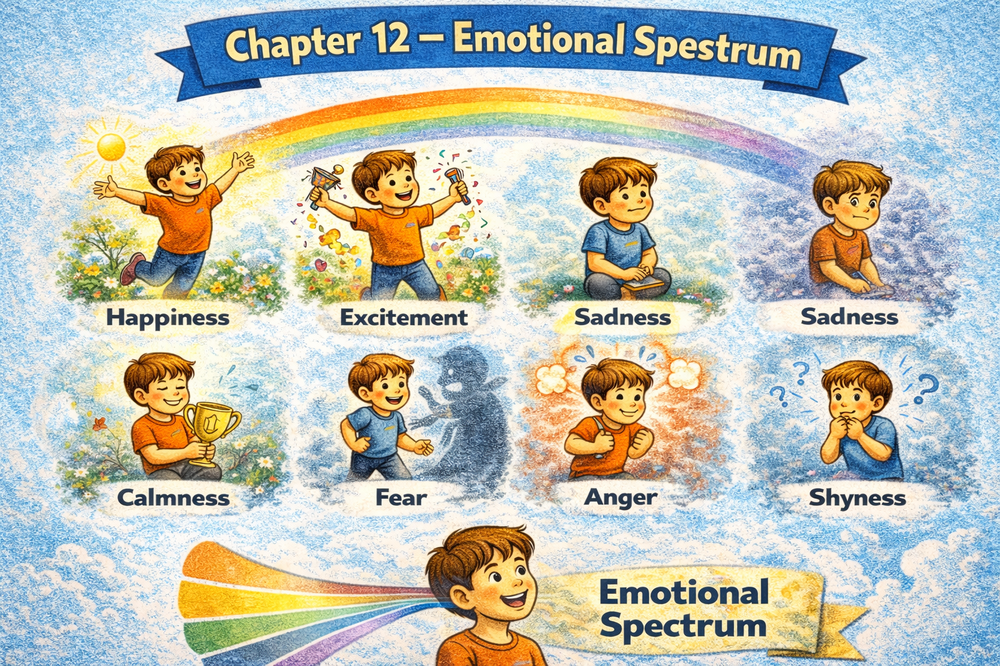

Chapter 12 — Emotional Spectrum

Micro Scene 1 — Calm and Stability
1️⃣ Scene Text
At certain moments, I feel calm and mentally steady.
There is no urgency pressing on me.
My thoughts move at a controlled pace.
The environment feels predictable and manageable.
Nothing demands immediate reaction.
Clarity replaces tension.
The absence of pressure creates mental space.
Even if tasks remain unfinished, they do not disturb my balance.
Calm does not mean inactivity; it means stability.
Emotional steadiness allows rational evaluation.
When I am calm, my decisions become clearer.
2️⃣ Core Verb Pool
feel
move
press
demand
replace
create
remain
disturb
allow
become
3️⃣ Structure Patterns
I feel + adjective
There is + noun
Even if X + verb, Y + verb
X does not mean A; it means B
When X + verb, Y + verb
4️⃣ Replace & Extend
Replace the calm:
I feel calm.
→ I feel centered.
→ I feel grounded.
Replace the balance:
Tasks do not disturb my balance.
→ Uncertainty does not overwhelm me.
→ Pressure does not control me.
Replace the clarity:
Calm allows rational evaluation.
→ Stability enables focus.
→ Stillness supports reflection.
5️⃣ Spoken Mode
I feel calm.
Nothing feels urgent.
Even if things aren’t finished, I’m steady.
Calm doesn’t mean I stop working.
It just means I’m balanced.
🔎 Structural Notes
• “Even if…” protects emotional state from external condition.
• “does not mean…, it means…” clarifies misconception.
• Emotional states can be defined structurally.
Micro Scene 2 — Mild Tension
1️⃣ Scene Text
Sometimes I feel a subtle sense of tension beneath the surface.
Nothing is visibly wrong, yet something feels slightly unsettled.
My thoughts become faster but less organized.
I notice a quiet pressure building in the background.
It is not panic, but it is not calm either.
Uncertainty creates a low level of discomfort.
Small unresolved tasks increase mental noise.
The tension remains manageable but persistent.
If ignored, it may gradually intensify.
Awareness prevents escalation.
Mild tension signals that adjustment may be needed.
2️⃣ Core Verb Pool
feel
become
notice
build
create
increase
remain
ignore
intensify
prevent
signal
need
3️⃣ Structure Patterns
Sometimes I feel + noun
Nothing + verb, yet + clause
X becomes + adjective
It is not A, but not B either
If X + past participle, Y may + verb
X signals that + clause
4️⃣ Replace & Extend
Replace the tension:
I feel subtle tension.
→ I feel slight pressure.
→ I feel mild unease.
Replace the build-up:
Pressure builds in the background.
→ Stress accumulates quietly.
→ Doubt grows gradually.
Replace the signal:
Tension signals adjustment.
→ Discomfort signals misalignment.
→ Restlessness signals change.
5️⃣ Spoken Mode
I feel a bit tense.
Nothing’s wrong, but something feels off.
It’s not panic — just slight pressure.
If I ignore it, it might get worse.
That tension usually means I need to adjust something.
🔎 Structural Notes
• “beneath the surface” implies hidden emotional layer.
• “not A, but not B either” marks emotional midpoint.
• Emotions often function as signals.
Micro Scene 3 — Frustration and Irritation
1️⃣ Scene Text
Frustration arises when effort does not produce expected results.
I feel irritated when progress stalls repeatedly.
Small obstacles begin to feel disproportionately large.
Patience becomes harder to maintain.
If interruptions occur frequently, focus deteriorates.
The gap between intention and outcome generates tension.
I notice my tone becoming sharper.
Frustration is often directed at circumstances rather than people.
When expectations remain unmet, irritation increases.
Unchecked frustration may escalate into anger.
Recognizing it early prevents unnecessary conflict.
2️⃣ Core Verb Pool
arise
produce
feel
stall
maintain
occur
deteriorate
generate
notice
direct
remain
increase
escalate
prevent
3️⃣ Structure Patterns
X arises when + clause
If X + verb, Y + verb
The gap between A and B + verb
X becomes + adjective
X is directed at + noun
If X + past participle, Y may + verb
4️⃣ Replace & Extend
Replace the obstacle:
Progress stalls.
→ Communication breaks down.
→ Effort fails to convert into results.
Replace the escalation:
Frustration escalates into anger.
→ Doubt escalates into anxiety.
→ Discomfort escalates into resistance.
Replace the recognition:
Recognizing it prevents conflict.
→ Acknowledging it reduces tension.
→ Addressing it restores control.
5️⃣ Spoken Mode
I get frustrated when things don’t move forward.
If I keep getting interrupted, I lose focus.
Small problems start to feel bigger than they are.
If I don’t catch it early, frustration can turn into anger.
Noticing it helps me control it.
🔎 Structural Notes
• “The gap between…” expresses emotional trigger.
• “escalate into” marks intensity shift.
• Emotional awareness modifies outcome.
Micro Scene 4 — Anxiety and Uncertainty
1️⃣ Scene Text
Anxiety emerges when the future feels unpredictable.
I begin to imagine negative outcomes before they occur.
Uncertainty amplifies perceived risk.
My thoughts circle around unresolved possibilities.
If information is incomplete, worry fills the gap.
The body reacts even before evidence appears.
Anxiety does not always reflect reality; it reflects projection.
When control feels limited, tension increases.
The mind searches for certainty where none exists.
If left unchecked, anxiety distorts evaluation.
Recognizing uncertainty reduces its emotional intensity.
2️⃣ Core Verb Pool
emerge
imagine
occur
amplify
circle
fill
react
reflect
increase
search
exist
distort
reduce
3️⃣ Structure Patterns
X emerges when + clause
I begin to + verb
If X + verb, Y + verb
X does not always + verb; it + verb
When X + verb, Y + verb
If left + past participle, X + verb
4️⃣ Replace & Extend
Replace the projection:
Anxiety reflects projection.
→ Fear reflects anticipation.
→ Doubt reflects uncertainty.
Replace the gap:
Worry fills the gap.
→ Assumption fills the gap.
→ Imagination fills the gap.
Replace the distortion:
Anxiety distorts evaluation.
→ Fear distorts judgment.
→ Pressure distorts perception.
5️⃣ Spoken Mode
I feel anxious when the future feels uncertain.
If I don’t have enough information, I start imagining worst-case scenarios.
Anxiety isn’t always about reality — it’s about projection.
If I don’t manage it, it affects my judgment.
Recognizing uncertainty helps reduce it.
🔎 Structural Notes
• “If left unchecked” implies lack of regulation.
• “reflect projection” separates emotion from fact.
• Anxiety is often a reaction to ambiguity, not evidence.
Micro Scene 5 — Motivation and Drive
1️⃣ Scene Text
Motivation arises when purpose becomes clear.
I feel energized when effort aligns with intention.
Clear goals generate forward momentum.
Progress reinforces internal drive.
When results become visible, confidence increases.
Motivation does not depend solely on emotion; it depends on meaning.
If the task feels significant, energy sustains itself.
Drive grows through consistent action rather than sudden inspiration.
Even small achievements can strengthen determination.
Without direction, motivation weakens.
Meaning transforms effort into movement.
2️⃣ Core Verb Pool
arise
become
align
generate
reinforce
increase
depend
feel
sustain
grow
strengthen
weaken
transform
3️⃣ Structure Patterns
X arises when + clause
I feel + adjective when + clause
X generates + noun
When X + verb, Y + verb
X depends on + noun
Even + noun + can + verb
Without X, Y + verb
4️⃣ Replace & Extend
Replace the alignment:
Effort aligns with intention.
→ Action aligns with values.
→ Strategy aligns with goals.
Replace reinforcement:
Progress reinforces drive.
→ Success reinforces confidence.
→ Completion reinforces momentum.
Replace direction:
Without direction, motivation weakens.
→ Without clarity, energy declines.
→ Without meaning, effort fades.
5️⃣ Spoken Mode
I feel motivated when I know why I’m doing something.
Clear goals create momentum.
Even small wins boost my drive.
Motivation isn’t just emotion — it’s meaning.
Without direction, energy drops.
🔎 Structural Notes
• “align with” expresses internal coherence.
• “reinforce” signals positive loop.
• Motivation is framed structurally, not romantically.
Micro Scene 6 — Emotional Complexity
1️⃣ Scene Text
Emotions rarely exist in isolation.
I can feel gratitude and pressure at the same time.
Success may generate satisfaction while also creating expectation.
Relief sometimes coexists with uncertainty.
Conflicting emotions do not cancel each other; they coexist.
The intensity of one feeling may overshadow another.
Emotional states fluctuate depending on context.
If circumstances shift, internal responses adjust accordingly.
Mixed emotions often reflect complex situations.
Awareness does not eliminate emotion, but it clarifies it.
Emotional complexity reflects psychological depth.
2️⃣ Core Verb Pool
exist
feel
generate
coexist
cancel
overshadow
fluctuate
depend
shift
adjust
reflect
clarify
3️⃣ Structure Patterns
X rarely + verb
I can feel A and B at the same time
X may + verb while + verb-ing
X does not + verb; it + verb
If X + verb, Y + verb
X reflects + noun
4️⃣ Replace & Extend
Replace coexistence:
Gratitude and pressure coexist.
→ Excitement and fear coexist.
→ Confidence and doubt coexist.
Replace fluctuation:
Emotions fluctuate.
→ Intensity fluctuates.
→ Mood shifts gradually.
Replace reflection:
Mixed emotions reflect complexity.
→ Internal conflict reflects transition.
→ Emotional tension reflects growth.
5️⃣ Spoken Mode
I can feel two things at once.
Success can feel good and stressful at the same time.
Emotions don’t cancel each other out — they coexist.
My mood shifts depending on the situation.
Mixed feelings usually mean the situation is complex.
🔎 Structural Notes
• “while + verb-ing” expresses simultaneous states.
• “does not…, it…” corrects oversimplification.
• Emotional language benefits from structural framing.
🔸 Integration Scene — The Emotional Spectrum
Emotions vary in intensity and direction.
Calm stabilizes thought.
Tension signals adjustment.
Frustration arises from blocked progress.
Anxiety reflects uncertainty.
Motivation emerges from alignment and meaning.
Complex emotions coexist rather than compete.
Emotional states fluctuate with context.
Awareness transforms reaction into regulation.
Feelings are not random; they are responsive.
They reflect perception, interpretation, and expectation.
Unchecked emotions escalate.
Recognized emotions clarify action.
Emotional literacy strengthens decision-making.
Balance requires recognition.
Clarity requires awareness.
Integration Verb Focus
feel
arise
signal
reflect
escalate
regulate
clarify
align